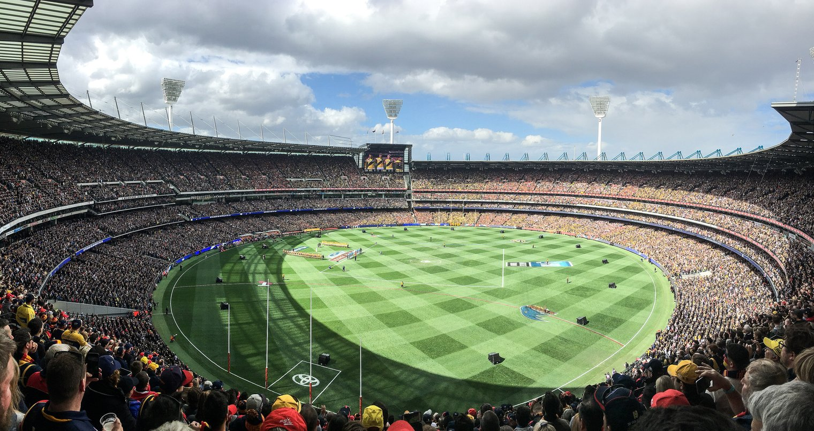
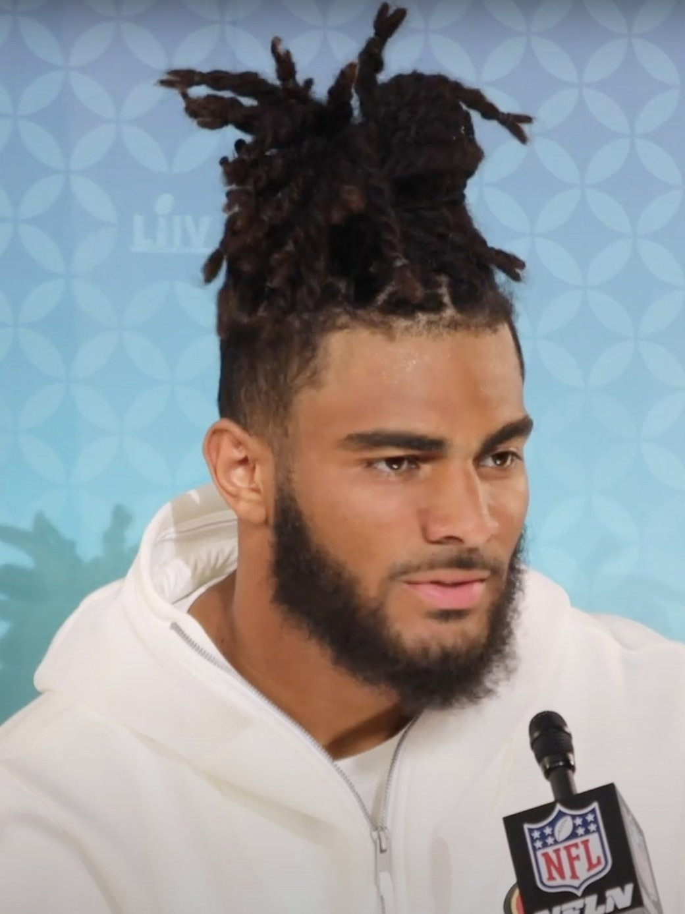
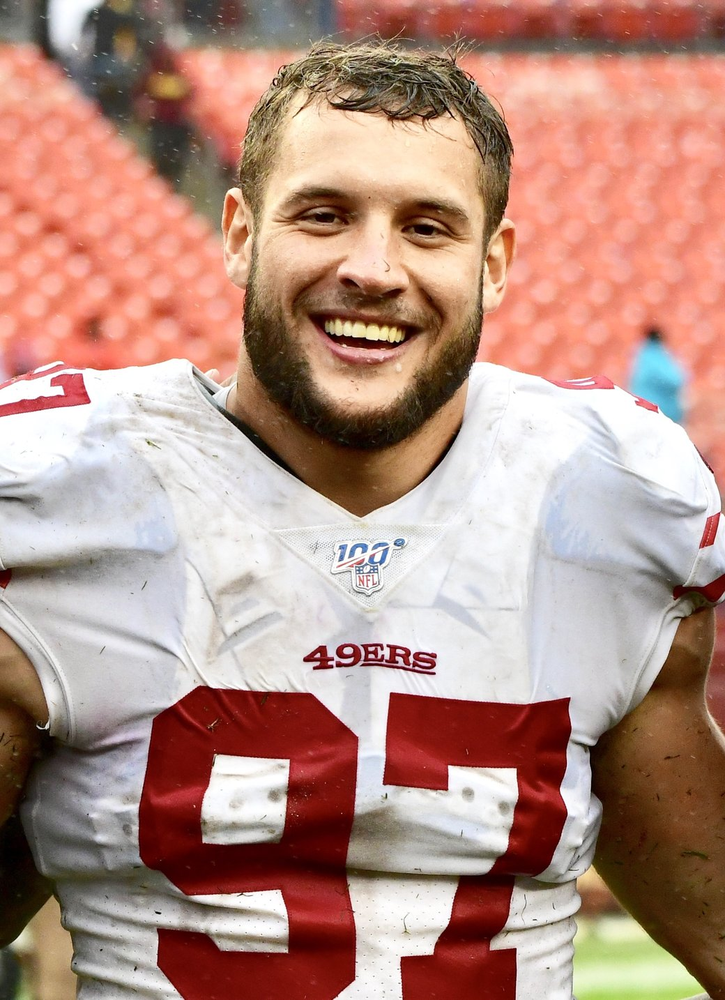

49ers 27, Rams 7 In Melbourne, And I Think We Just Watched The Best Team In Football
Brock Purdy threw a bad interception in the second quarter and then threw three touchdowns. The defense held the reigning MVP to 155 yards, stuffed a sneak on fourth and goal from the one, and never let the Rams take a breath. One hundred thousand people at the Melbourne Cricket Ground watched us take apart the team everybody picked to win the West.

I set an alarm for a football game and I'd do it again tomorrow.
5:35 on a Thursday, a cricket ground in Melbourne, a team I've spent three years arguing about with people who don't care, and the 49ers went down there and took the Los Angeles Rams apart 27 to 7. Not a squeaker. Not one of those wins where you spend Friday explaining why it counts. They beat the club that everybody, including me, spent all summer saying was going to win this division, and for about three quarters of it the Rams looked like they were playing in sand.
I wrote the preview before kickoff. I said I thought we'd cover and lose. I want that on the record, because I have never been happier to be this wrong.

One hundred thousand and twenty one people. In Australia. In September. That's the seventh largest regular season crowd this league has ever drawn and it got pulled out of a country that mostly watches a completely different game on that exact field. You could hear the place every single time Deebo touched the ball, which is a sentence I didn't expect to be typing this week.
The interception first, because that's where the night actually turned.
Second quarter, we're down 7 to 3, Purdy drops back on a short right and tries to put it on George Kittle, and Quentin Lake reads the whole thing the entire way. Picked off at the Los Angeles 31. It wasn't tipped, it wasn't a miscommunication, it wasn't bad luck. He threw it to the wrong guy, and I said something out loud that I'm not going to repeat here, because I've watched this exact quarterback get eaten alive for a week over a throw like that.
Three minutes and six seconds later, Matthew Stafford went deep right for Puka Nacua and Renardo Green took it off him at our own 14.
That's the game. The whole thing, right there. The reigning MVP had the football in a two score spot and our defense just refused to let him have it, and from the second Green came down with that ball the Rams never led again and never scored again. Nine plays, 86 yards, four and a half minutes, and Purdy put a 39 yard touchdown on Demarcus Robinson right down the middle of the field. 10 to 7. The guy who'd thrown the pick answered it with a bomb.

Purdy finished 25 of 34 for 205 yards and three scores. The yardage total is going to bother somebody on the internet today and that person hasn't thought about it for more than four seconds. We ran 64 plays, held the ball for 33 minutes and 50 seconds and won by twenty. You don't need 320 through the air when you're playing keep away from a team that scored 518 points last season.
Now the play I'll still be chewing on in December.
Third quarter, we're up 17 to 7, and the Rams finally strung something together. Twelve plays. Seventy two yards. Seven minutes and twenty two seconds off the clock, which is exactly the kind of possession that drags a team back into a game it has no business being in. Nacua for 23 over the middle. Davante Adams for 13 down to the 11. Kyren Williams grinding it inside. They got to first and goal from the nine, then second and goal from the three, then third and goal from the two, and on third down Stafford dropped a little one to Nacua that got them to the one.
Fourth and goal. From the one. Sean McVay left his offense out there.
Stafford went under center and tried to sneak it behind Kevin Dotson, and Osa Odighizuwa and Gracen Halton got underneath the entire play and stopped it dead. No push. No pile moving. They put the reigning MVP on the ground half a yard short in front of a hundred thousand people and handed us the football at our own one inch line.
I was standing up. I don't remember standing up.
And then, because apparently this is who we are now, the 49ers took that ball at their own 1 and drove 99 yards with it. Eleven plays. Five minutes and forty four seconds. Purdy scrambled left for 18 on the final snap of the third quarter to keep it alive, and then found Deebo Samuel for 15 in the corner. 24 to 7.
A goal-line stand and a 99 yard answer, back to back, in the first NFL game ever played in Australia. Fourteen point swing across about eleven minutes of clock, and it snapped the Rams in half. They were finished after that. You could see it on them.

The Deebo reunion is already worth every dollar. Bringing Deebo back cost seven million for one year, and he opened the second half by taking a kickoff out to our own 49, which is how a possession that ends in a Mike Evans touchdown fade gets started in the first place. Six catches, a carry, two returns, a score. He looked like 2021 Deebo and I'm not going to pretend to be measured about that.
The defense, and why Raheem Morris might change everything
We didn't record a single sack. Zero. And Matthew Stafford, the reigning Most Valuable Player in this sport, finished 15 of 25 for 155 yards with no touchdowns, one interception and a 61.2 rating.
Read that again, because it's the most important thing that happened Thursday. For two years this defense had to disguise everything on the back end because it couldn't get anywhere near a quarterback, and last season we finished dead last in the league in sacks. Robert Saleh took the Tennessee job. Kyle Shanahan went and got Raheem Morris, who he's coached alongside twice before, and Morris took the thing down to the studs.
Five man fronts. A linebacker spot they're calling the fever backer that lines up on the ball, off the ball, in coverage, wherever, so an offense can't tell you what it's looking at before the snap. A hybrid nickel they call the star, the job Jalen Ramsey used to play for Morris in Los Angeles, and Upton Stout has it now. Ji'Ayir Brown said during camp that the whole thing was a lot less thinking, and you could see precisely what he meant, because nobody out there Thursday looked like they were processing anything. They were just arriving.

Fred Warner had eleven tackles in his first meaningful game since the ankle. Eleven, plus a ball knocked away, plus the punchout on Tyler Higbee in the fourth quarter that Keion White recovered at the Los Angeles 43 and that turned into a 56 yard Eddy Pineiro field goal. He missed most of a year, came back, and immediately went back to being the best linebacker alive. I'd been quietly terrified about that ankle since last November and I can stop now.
Marques Sigle had nine tackles. Dre Greenlaw had six in his own return. Deommodore Lenoir had six and was draped on Nacua all night. Nick Bosa had two tackles for loss and a quarterback hit and spent four quarters getting chipped by everybody the Rams could spare. And Jaden Dugger, a rookie, played real snaps at that fever backer spot and finished with five tackles, one of them inside the five on the stand.

The Rams went 2 for 9 on third down. They went 1 for 3 on fourth down. They were 1 for 3 in the red zone. Their last three real possessions ended in a turnover on downs, a lost fumble and another turnover on downs. Two hundred and ninety total yards, and a big chunk of that arrived after the result was already settled.
Now the part I've been waiting all summer to write. Myles Garrett, who Los Angeles traded for in June and handed 208 million dollars, the reigning Defensive Player of the Year, did not register a single tackle. Not one. Davante Adams caught three balls for 26 yards on six targets. That team spent an entire offseason assembling the most expensive roster in the division and got 7 points out of it.
Shanahan called a beautiful game and hardly anybody is going to say so
Everybody's going to talk about the defense today, and they should. But go look at what the play caller did with a football team that had just crossed the international date line.
Thirty carries. A hundred and seventy four yards on the ground at 5.8 a pop. Christian McCaffrey went for 68 on ten carries and rookie Kaelon Black went for 65 on fourteen and never once looked like a rookie doing it. Twenty three first downs, ten of them rushing. Seven of twelve on third down. Two penalties all night for 21 yards, which for a team playing at four in the morning body clock time is genuinely absurd.
That's a coach who understood the assignment down to the letter. Shorten it. Run it. Keep your defense off the grass and keep your own guys out of a track meet on no sleep. Thirty three minutes and fifty seconds of possession against a team built to score in bunches, and the bunches never showed up.
We got our first real look at the Purdy and Evans thing too. Six catches for 49 and the two yard fade for the score, which is exactly what you sign a receiver that size to go do, and the Evans signing looked like he's been in this offense for years instead of months. Demarcus Robinson caught two balls and one of them went 39 for a touchdown. Kittle was quiet at two for 12 and I couldn't possibly care less, because he was out there at all.
The line score
| Team | 1st | 2nd | 3rd | 4th | Final |
|---|---|---|---|---|---|
| San Francisco 49ers | 3 | 7 | 7 | 10 | 27 |
| Los Angeles Rams | 0 | 7 | 0 | 0 | 7 |
Total yards 379 to 290. First downs 23 to 15. Turnovers two to one our way. Eddy Pineiro went 2 for 3 with the 56 yarder and clanged a 52 off the right upright in garbage time, and that's the only thing all night I'm willing to complain about.
One genuinely bad moment, and it deserves more than a footnote. De'Zhaun Stribling went down early with a non-contact ankle and got carted off, in his first NFL game, eight thousand miles from home. That kid had a real camp and I've been pulling for him since the draft took heat for taking him. Hoping hard that it's short.
So are they the best team in football?
I'm a homer and I know it, so pull the bias out and just look at the shape of the thing. The Rams were 3.5 point favorites on a neutral field, the model had them better than 60 percent to win it, and the 49ers beat them by twenty with their quarterback throwing for 205 yards. We won on a run game, a goal-line stand, a 99 yard drive, two takeaways and a third down defense that surrendered two conversions in nine tries.
None of that is a hot night. A hot night is a quarterback going 400 and 4 while everybody rushes to declare something. This was the opposite. We won by controlling every single thing a good football team controls, against the club most people had already penciled into the NFC title game, in the strangest environment the sport has, off a flight that should have wrecked us.
Both these teams went 12 and 5 last year. The Rams hung 42 on us in Santa Clara in week 10 and I turned that one off in the third quarter. I've thought about it roughly once a week ever since. Thursday was the answer to it and then some, and it arrived in the one game on the schedule where neither side had a crowd to lean on.
Sixteen to go, and I know how this works. Somebody pulls a hamstring in week 3, the schedule turns ugly in November, and we're all back to arguing about whether Shanahan should've run it on second down. Miami comes to Levi's next on a short week against a team that didn't just fly to the other side of the planet, so the very next thing this group has to prove is that it can handle being the team everybody's coming for.
But for one night we were the best team in football, it honestly wasn't close, and I'm holding onto that for at least a week.
The week by week is on the schedule hub, who's actually available is on the depth chart, the season long argument lives in the season preview, and the rest of it is on the 49ers hub.
Somebody in Melbourne is walking around in a brand new Deebo jersey right now with no idea what they've signed up for. Good luck to them.
More coverage: Bay Area Sports section · Bay Area Sports · Bay Area Sports Blog home